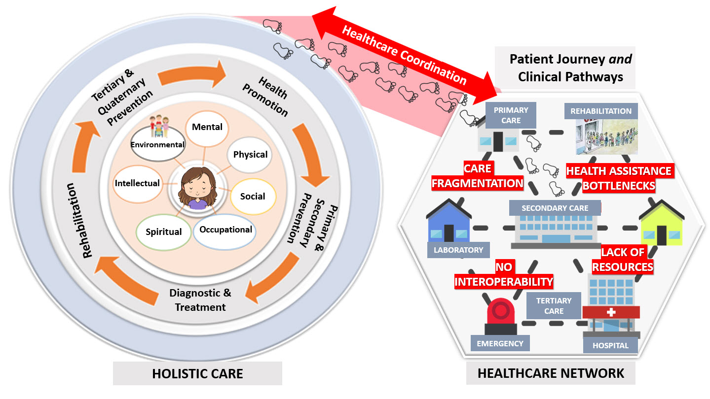
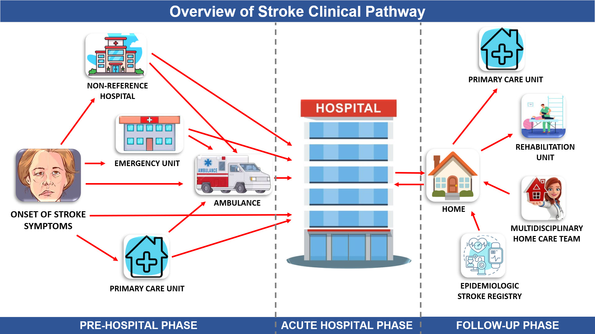

Projeto Molic-AVC: Monitoramento da Linha de Cuidado do AVC
1.0.1 - ci-build
Projeto Molic-AVC: Monitoramento da Linha de Cuidado do AVC - Local Development build (v1.0.1). See the Directory of published versions
Gabrielle dos Santos Leandro, Eduardo Alves Portela Santos, Ricardo João Cruz-Correia, Claudia Maria Cabral Moro
This Implementation Guide was developed during the Doctoral Thesis of the student Gabrielle dos Santos Leandro.
* The Brazilian Research and Ethics Committee Report approved this study by # 4,917,962.
Background: Effective care coordination is pivotal when dealing with stroke management. However, achieving seamless coordination becomes challenging due to interoperability issues among diverse healthcare information systems (HIS). Recognizing this challenge, the Fast Healthcare Interoperability Resource (FHIR) specification has been introduced to standardize the exchange of information across HIS, enhancing their interoperability. Objective: To develop a FHIR Implementation Guide (IG) for stroke care that aligns with the principles of value-based health care. Method: We used BPMN (Business Process Model and Notation) to illustrate the Stroke Care Pathway, drawing inspiration from principal Pathways and Clinical Guidelines. This study especially zooms in on stroke care practices in Joinville - SC. Further, we devised a data dictionary based on the outlined Care Pathway and referenced the guidelines provided by the International Consortium for Health Outcomes Measurement (ICHOM). In our final step, we mapped out variables related to the available FHIR resources and referenced the IG from Rede Nacional de Dados em Saúde (RNDS). Results: Our BPMN depiction extensively covered phases like Pre-Hospital, Hospital, and Rehabilitation. The constructed IG amalgamated profiles from RNDS, including Health Establishment, Professional, and Individual, and additionally introduced profiles fashioned from the identified variables such as Observation, Encounter, Condition, and Questionnaire. We utilized FHIR Code Systems and Value Sets to represent terminologies. Conclusion: This newly developed IG marks a significant stride in health interoperability. Its forward-thinking approach has the potential to be recognized and adopted as a benchmark by RNDS in its future endeavors related to stroke care.
Stroke. Interoperability. Healthcare Information System.
Stroke, a non-communicable chronic disease, stands as the second-leading cause of death worldwide and the third cause of disability-adjusted life years lost [1]. Once stroke symptoms manifest, certain factors within the treatment process can significantly impact the patient's outcome, including the stroke therapeutical window. This critical window represents the optimal timeframe to intervene during the pathological process of cerebral ischemia, aiming to minimize damage to the central nervous system [2–4]. Additionally, after being discharged from the hospital, stroke survivors commonly contend with a diverse array of impairments that necessitate care across multiple healthcare institutions during their recovery phase [5].
The coordination of care stands out among the challenges encountered in the follow-up treatment of stroke patients. Since stroke patients require care from multiple healthcare providers, including primary care physicians, neurologists, rehabilitation specialists, therapists, and nurses, ensuring smooth coordination of appointments, treatments, and therapies across various healthcare settings can be complex. Inadequate management of this coordination can result in gaps in care and potentially hinder the patient's overall progress. To address this issue, it is crucial to establish a support network through clinical protocols and efficient clinical pathways [6–8].
Clinical pathways are technical standards that outline the patient's itinerary and incorporate the involvement of healthcare professionals and institutions to create a cohesive healthcare continuum. These pathways play a vital role in promoting holistic healthcare for stroke patients [8,9]. The patient’s journey can be audited by mapping the healthcare process to identify problems and propose improvements in the quality and efficiency of clinical management [10]. One of the tools commonly used to map the patient's journey is the Business Process Model and Notation (BPMN). BPMN is a standardized graphical notation that allows for the representation and visualization of business processes and workflows. It provides a clear and structured way to model the different steps, activities, decisions, and interactions involved in the patient's care trajectory [11,12].
However, despite the importance of clinical pathways, stroke patients may encounter barriers when attempting to navigate them. These barriers can include long waiting lines, insufficient availability of hospital beds, and challenges in dealing with different registration numbers for accessing treatment. Consequently, a gap often exists between the recommended clinical pathway and the actual patient journey. To bridge this gap and enhance the quality and efficiency of clinical administration, it becomes crucial to gain a comprehensive understanding of the actual patient journey and monitor it using reliable metrics [13–15] (Figure 1).
|  |
|---|
Figure 1 – Challenges faced in the healthcare network for promoting holistic patient care.
Recognizing the importance of comprehensive and standardized metrics, including the ones provided by the International Consortium for Health Outcomes Measurement (ICHOM), becomes essential in this context. By implementing the ICHOM metrics, healthcare providers can establish a common framework for assessing stroke patient outcomes, enabling them to benchmark their performance, identify areas for improvement, and drive advancements in stroke care. These metrics encompass a range of dimensions, including clinical outcomes, functional status, and quality of life, providing a holistic view of the patient's journey [15–17].
However, considering the fact that stroke patients may receive care from various healthcare services throughout their healthcare journey, and given the comprehensive nature of ICHOM metrics that encompass multiple dimensions of care, it is imperative to address the challenges associated with interoperability among Health Information Systems (HIS) [18,19]. Each healthcare service typically relies on its own distinct proprietary information system, creating obstacles to the seamless exchange of data. Consequently, the need arises to proactively tackle interoperability issues among different types of HIS catering to stroke patients [19]. A widely employed solution in this regard is the adoption of the Fast Healthcare Interoperability Resources (FHIR) standard, which facilitates the standardized exchange of health information across diverse systems [20,21].
Among the resources provided by FHIR, the Implementation Guide resource stands out. The FHIR Implementation Guide focuses on addressing practical concerns, including the definition of specific profiles, achieving interoperability with legacy systems, ensuring data security and privacy, and other pertinent topics. In summary, the FHIR Implementation Guide serves as a valuable tool to aid developers, implementers, and healthcare organizations in effectively adopting and implementing the FHIR standard within their healthcare environments. By facilitating the integration and sharing of relevant data for stroke patient care, FHIR empowers healthcare providers to make informed decisions, deliver personalized interventions, and continuously optimize clinical administration [22–25].
The objective of this study was to model the care pathway of stroke using BPMN notation, with a focus on monitoring and analyzing outcomes, considering the ICHOM standard, mapping the stroke patient journey, and subsequently creating the FHIR Implementation Guide based on the developed model. This study contributes to enhancing our understanding of the stroke patient journey, improving outcome monitoring, establishing standardized metrics, visualizing the patient journey, and promoting interoperability in stroke care analysis. Consequently, it promotes driving evidence-based decision-making, personalized interventions, and continuous optimization of stroke care delivery, ultimately leading to improved quality and efficiency of patient care.
We conducted the initial phase of this research by mapping the Stroke Clinical Pathway using BPMN by Camunda®. The patient journey case study conducted in Joinville, Brazil, served as a fundamental basis for this representation. Joinville was specifically chosen because of its resources, including the well-established Stroke Clinical Pathway [26] and the Joinville Stroke Registry (Joinvasc), a legally mandated program that tracks stroke patients for 5 years of follow-up. Joinvasc collects comprehensive data on quality metrics, patient-reported outcomes, costs, and socioeconomic impact, making it an invaluable resource for numerous stroke-related research studies [26–29].
To enrich the Joinville case study, we integrated documentation from the Brazilian Clinical Pathway for Cerebrovascular Accidents in Adults [8], the Global Stroke Guidelines and Action Plan: A Road Map for Quality Stroke Care [7], and the ICHOM Stroke Data Collection Reference Guide [30]. Additionally, we incorporated insights from the ICHOM Stroke Data Dictionary [31] into our analysis. After representing the Stroke Clinical Pathway, we derived a Data Dictionary using a spreadsheet. Subsequently, we aligned this Data Dictionary with FHIR resources to formulate Profiles. In the concluding steps, we crafted Implementation Guides based on these Profiles, utilizing FHIR Short Hand, Sushi, and the Implementation Guide Publisher.
In order to provide a more comprehensive representation of the Stroke Clinical Pathway, it has been categorically partitioned into three distinct phases: (1) Pre-Hospital Phase, (2) Stroke Acute Hospital Phase, and (3) Follow-up and Rehabilitation Phase, as visually depicted in Figure 2. The Pre-Hospital Phase encompasses the temporal interval initiating from the manifestation of the onset of stroke symptoms and extending until the point of referral or transfer to the designated referral hospital. The Acute Hospital Phase corresponds to the duration of hospitalization at the referral facility, during which the patient undergoes comprehensive acute care encompassing diagnostic evaluations, therapeutic interventions, specialized monitoring, and continues until the patient's eventual discharge from the hospital. Lastly, the Follow-up and Rehabilitation Phase represents the subsequent period after hospital discharge, wherein the patient's progress is continually monitored, while concurrently receiving post-discharge care, rehabilitation services, and enduring support to facilitate their recovery process.
|  |
|---|
Figure 2 – Representation and relationship of the phases (a) Pre-Hospital Phase, (b) Stroke Acute Hospital Phase, and (c) Follow-up and Rehabilitation Phase in the clinical pathway for stroke patients.
The Pre-Hospital Phase (Figure 3) consist of six defined pools:
- Location where the stroke onset symptoms occurred
- Primary Care Unit
- 24-hour Emergency Unit
- Non-Reference Hospital
- Ambulance
- Stroke Reference Hospital
Figure 3 – Representation in BPMN of the Pre-Hospital Phase of stroke patient care.
Upon symptom onset at the designated location, patients are faced with the decision: "What Health Unit does the user go to?" This decision delineates five potential trajectories within the Joinville Public Health System: Primary Care Unit, 24-hour Emergency Unit, Non-Reference Hospital, Public Ambulance, and Stroke Reference Hospital. Each trajectory is mirrored by a unique pool. The pools for the Primary Care Unit, 24-hour Emergency Unit, Non-Reference Hospital, and Stroke Reference Hospital are partitioned into three lanes. These lanes depict the sequential engagements of the Receptionist, Nurse, and Physician. During each interaction, specific data points, highlighted in green and inclusive of both process data and ICHOM data, should be integrated into the Electronic Health Record. Although the 24-hour Emergency Unit, Non-Reference Hospital, and Stroke Reference Hospital exhibit similar processes, there's a key distinction. Those at the Stroke Reference Hospital are ushered to the Acute Stroke Unit, while the rest are directed to the Stroke Reference Hospital. The Primary Care Unit, in contrast, adheres to its unique triage protocol, diverging from the Manchester Protocol prevalent elsewhere. The Ambulance pool stands apart with its two lanes, representing the receptionist and the healthcare professional in charge of emergency care, which may be a doctor, a nurse, or both. Importantly, a pathway highlighted in red delineates the recommended protocol for stroke patient care.
In the reference hospital dedicated to stroke care, depicted in Figure 4, the initial point of contact is the Acute Stroke Unit. This unit, helmed by a multidisciplinary team of physicians and nurses, prioritizes immediate intervention. A salient aspect of this model focuses on the critical role played by the neurologist, especially in data collection following the ICHOM guidelines. Notably, while non-interoperable systems may sometimes present barriers to comprehensive data acquisition at this juncture, the emphasis remains on collecting this data, representing an ideal scenario.
Figure 4 – Representation in BPMN of the Acute Hospital Phase of stroke patient care.
Following a thorough evaluation of the patient's clinical history, the neurologist discerns the need for advanced imaging tests. Primarily, these include the Computed Tomography (CT scan) and the Magnetic Resonance Angiography (MRA), instrumental in classifying the type of stroke and subsequently delineating the optimal treatment strategy. This study predominantly focuses on ischemic stroke treatments, taking into account a therapeutic window of 4 hours and 30 minutes for thrombolysis, and an extended 12 hours for thrombectomy initiation. A pressing question at this stage remains: 'Is there an indication for thrombolytic therapy, thrombectomy, or hemicraniectomy?'
In situations where clinical indicators for the above treatments are absent, the evaluation by the neurologist continues unabated. If a patient's condition is assessed as stable, bed allocation within the Integral Stroke Unit (ISU) becomes a priority. Nonetheless, constraints in bed availability necessitate seeking alternative accommodations within the hospital. Procedures such as thrombolytic therapy are typically administered within the Acute Stroke Unit. In contrast, more involved procedures like thrombectomy and hemicraniectomy warrant the transfer of the patient to specialized surgical facilities. For patients in critical condition, immediate referral to the Intensive Care Unit (ICU) becomes paramount. It's also important to underscore that diagnostic tests, like the CT scan and MRA, are conducted within the dedicated Diagnostic Imaging Department. The average duration within the Acute Stroke Unit hovers around three days.
Post-procedures, especially after Thrombolytic therapy and thrombectomy, patients are closely monitored for potential symptoms of intracranial hemorrhage. If such symptoms manifest, considerations for hemicraniectomy come to the fore. The subsequent phase involves vigilant monitoring of the patient's clinical status. Those deemed unstable are directed to the ICU, where outcomes can range from unfortunate demises to stabilization or significant clinical improvement. Stable patients are subsequently evaluated for bed availability in the ISU. If beds are available, a transfer to the CSU occurs; if not, alternative hospital units come into play.
Within the ISU, patients are ensconced in an environment that promotes holistic care. This care is rendered by a team that spans multiple disciplines – physiotherapists, speech therapists, nutritionists, nurses, and neurologists, among others. During their stay, stringent data collection protocols, consistent with ICHOM guidelines, are implemented. Prior to discharge, the patient's status undergoes another round of evaluation to determine the need for extended care, be it through the Multidisciplinary Home Care Team or through a referral to a long-term care facility for stroke patients. Ultimately, two primary outcomes materialize: either the patient is prepped for discharge to their home or a designated care facility, or they are referred to a Long-Term Stroke Care Hospital. In the realm of stroke care, the treatment standards upheld within the ISU should ideally be mirrored across all hospital inpatient units. However, in many instances, this parity is not observed, leading to potential discrepancies and gaps in patient care. It is noteworthy that the average length of stay within the ISU typically ranges from 5 to 12 days.
The Follow-up and Rehabilitation Phase é composta por 7 pools (Figure 5):
- Stroke Long-Term Hospital
- Home
- Primary Care Unit
- Rehabilitation Unit
- Reference Stroke Hospital
- Multidisciplinary Home Care Team
- Epidemiologic Stroke Registry
Figure 5 – Representation in BPMN of the Follow-up and Rehabilitation Phase of stroke patient care.
The initial pool, labeled 'Stroke Long-Term Hospital,' focuses on the routine monitoring of the patient by healthcare professionals within the Long-Term Care Hospital until one of the outcomes is reached, either hospital discharge or demise. The 'Home' pool encompasses the patient journey from hospital discharge through appointments and follow-ups at the Primary Health Care Unit, Rehabilitation Unit, the Reference Hospital for Stroke, home visits by the Multidisciplinary Home Care Team, and oversight by the Epidemiologic Stroke Registry. Once an intervention at one of these service units concludes, the patient reenters this flow to schedule their subsequent visit.
The procedures within the pools: 'Primary Care Unit', 'Rehabilitation Unit', 'Reference Stroke Hospital', and 'Multidisciplinary Home Care Team' share a consistent operational structure. Initially, the patient is received by the receptionist and subsequently directed to the scheduled healthcare professional, which might include nurses, physicians, physiotherapists, speech therapists, nutritionists, psychologists, among others. Following this consultation, the patient may be directed either to schedule another appointment or to conclude their current care cycle. This sequence recurs in a loop until the patient's treatment concludes.
The 'Epidemiologic Stroke Registry' pool operates on a distinct flow since its primary function is to collate data from stroke patients. This service amasses patient health data using various methods such as phone calls, mobile applications, or other communication mediums. Data collection intervals are set at 30 days, 90 days, and then annually for the first five years post-stroke (ICTUS) event, after which the patient is formally discharged from this monitoring service.
The following data dictionary was created considering data from the process and ICHOM as displayed in Table 1. In the 'Variable ID' column, the variables that need to be collected are displayed. In the 'M/O' column, 'M' stands for Mandatory (meaning its presence is required) and 'O' stands for Optional. 'Definition' displays the variable's definition. 'Reference' indicates whether the variable was referenced by the Process, by ICHOM, or by both. 'Timing' indicates when the variable is collected: Pre-Hospital Phase (PPH), Acute Hospital Phase (AHP), and Follow-up and Rehabilitation Phase (FRP). 'Terminology' indicates the specified terminology. 'Type' represents the proposed data type. 'Response Options' indicates the type of response as per the proposed terminology. Lastly, 'FHIR Resource' points to the resource associated with the variable. With this mapping in mind, the Implementation Guide for this study was developed considering Profiles, Extensions, Value Sets, and Use Cases.
Table 1 – Data Dictionary.
Based on the Data Dictionary mapping, we have delineated 7 Profiles, 13 Extensions, 20 ValueSets, and 20 Instances related to Molic-AVC's data framework. For detailed insights on each:
- Profiles include: Molic-AVC's Encounter, Molic-AVC's Observation, Molic-AVC's Organization, Molic-AVC's Patient, Molic-AVC's Practitioner, Molic-AVC's Questionnaire, and Molic-AVC's QuestionnaireResponse.
- Extensions encompass: Alcohol intake amount, Consciousness, Stroke Severity Score based on NIHSS, Estimated Stroke Severity Category based on NIHSS, Live Alone Pre-Stroke, Patient Ethnicity, Patient Gender Identity, Patient Race, Patient Sex, Patient's Residence Prior to a Stroke, Smoking Status, Stroke Window, and Stroke's Symptom Duration.
- ValueSets: Consciousness, EQ-5D-3L Response Questionnaire, Estimated Stroke Severity Category by the NIHSS, Functional Aspects and Rehabilitation: Feeding, Communication, and Stroke Rehabilitation, Gender Identity, Health-related Quality of Life Response Question, Healthcare Unit Code, Live Alone Pre-Stroke, Patient Ethnicity, Patient Race, Patient's Residence Prior to a Stroke, Prestroke and Poststroke Functional Status questionnaire, Professional Code, PROMIS-10 Response Questionnaire, Sex based on ICHOM standard, simplified modified Ranking Scale questionnaire (SMRSq), Smoking Status, Symptom Duration, VR-12 Response Questionnaire, and WHODAS Response Questionnaire.
- Instances: Specific use cases for Molic-AVC covering diverse facets like Encounter, Organization, Patient, QuestionnaireResponse, and many others.
For a comprehensive breakdown of these elements, visit the link: http://molic-avc.gabriellesantosleandro.com/toc.html.
Task Planning - os desafios em representar os processos em saúde. Apesar de representarmos a linha do cuidado do paciente com AVC da melhor forma possível, sabe-se que ela possui limitações, como por exemplo, a decisão “Is there improvement or stabilization of the clinical status?” pode ser feita durante todo o momento do processo, sendo que o paciente pode evoluir para o óbito a qualquer momento, contudo, devido a dificuldade em representar esse cenário, optou-se em colocar o desfecho óbito apenas após o paciente ser encaminhado para a UTI. Desafios em estabelecer em qual momento os dados são coletados e qual profissional de saúde faz essa coleta. Desafios em escolher quais ferramentas utilizar para a modelagem do Implementation Guide.
[1] Feigin VL, Brainin M, Norrving B, et al. World Stroke Organization (WSO): Global Stroke Fact Sheet 2022. International Journal of Stroke. 2022;17:18–29.
[2] Rajendram P, Ikram A, Fisher M. Combined Therapeutics: Future Opportunities for Co-therapy with Thrombectomy. Neurotherapeutics. 2023;20:693–704.
[3] Leandro G dos S, Miura DY, Safanelli J, et al. Analysis of Stroke Assistance in Covid-19 Pandemic by Process Mining Techniques. 2022.
[4] Zachrison KS, Dhand A, Schwamm LH, et al. A Network Approach to Stroke Systems of Care. Circ Cardiovasc Qual Outcomes. 2019;12.
[5] Lindsay LR, Thompson DA, O’Dell MW. Updated Approach to Stroke Rehabilitation. Medical Clinics of North America. 2020;104:199–211.
[6] Lindsay P, Furie KL, Davis SM, et al. World Stroke Organization Global Stroke Services Guidelines and Action Plan. International Journal of Stroke. 2014;9:4–13.
[7] Lindsay M, Norrving B, Furie K, et al. Global Stroke Guidelines and Action Plan: A Road Map for Quality Stroke Care. World Stroke Organization [Internet]. 2014 [cited 2023 Jun 23];1–80. Available from: https://www.world-stroke.org/assets/downloads/Global_Stroke_Guidelines_and_Action_Plan_All_in_one_English.pdf
[8] Brasil. Ministério da Saúde. Secretaria de Atenção Primária à Saúde. Clinical Pathway for Cerebrovascular Accident (CVA) in adults [Linha de Cuidado do Acidente Vascular Cerebral (AVC) no adulto] [Internet]. 1st ed. Brasília: Ministério da Saúde; 2020. Available from: http://bvsms.saude.gov.br/bvs/linha_cuidado_acidente_vascular_cerebral_adulto.pdf
[9] Nizar TE, Nurwahyuni A, Candi C. Systematic Review: The Influence of Clinical Pathway Implementation on Length of Stay and Patient Outcome of Stroke Infarct Patients. Proceedings of the International Conference of Health Development Covid-19 and the Role of Healthcare Workers in the Industrial Era (ICHD 2020). Paris, France: Atlantis Press; 2020.
[10] Borycki EM, Kushniruk AW, Wagner E, et al. Patient journey mapping: Integrating digital technologies into the journey. Knowledge Management & E-Learning: An International Journal. 2020;521–535.
[11] Weske M. Business Process Management. 3rd ed. Berlin, Germany: Springer; 2019.
[12] Pufahl L, Zerbato F, Weber B, et al. BPMN in healthcare: Challenges and best practices. Inf Syst. 2022;107:102013.
[13] Gache K, Leleu H, Nitenberg G, et al. Main barriers to effective implementation of stroke care pathways in France: a qualitative study. BMC Health Serv Res. 2014;14:95.
[14] Prior SJ, Reeves NS, Campbell SJ. Challenges of delivering evidence‐based stroke services for rural areas in Australia. Australian Journal of Rural Health. 2020;28:15–21.
[15] Martins SCO, Borelli WV, Secchi TL, et al. Disparities in Stroke Patient-Reported Outcomes Measurement Between Healthcare Systems in Brazil. Front Neurol. 2022;13.
[16] Salinas J, Sprinkhuizen SM, Ackerson T, et al. An International Standard Set of Patient-Centered Outcome Measures After Stroke. Stroke. 2016;47:180–186.
[17] Etges APB da S, Nabi J, Geubelle A, et al. Analytical Solutions to Support Value-based Health Care: The Ischemic Stroke Care Pathway Case [Internet]. 2022 [cited 2023 Jun 25]. Available from: https://catalyst.nejm.org/doi/full/10.1056/CAT.21.0415.
[18] Blom MC, Khalid M, Van-Lettow B, et al. Harmonization of the ICHOM Quality Measures to Enable Health Outcomes Measurement in Multimorbid Patients. Front Digit Health. 2020;2.
[19] Lehne M, Sass J, Essenwanger A, et al. Why digital medicine depends on interoperability. NPJ Digit Med. 2019;2:79.
[20] Saripalle R, Runyan C, Russell M. Using HL7 FHIR to achieve interoperability in patient health record. J Biomed Inform. 2019;94:103188.
[21] Lehne M, Luijten S, Vom Felde Genannt Imbusch P, et al. The use of FHIR in digital health – A review of the scientific literature. Stud Health Technol Inform. IOS Press; 2019. p. 52–58.
[22] HL7. Resource Implementation Guide [Internet]. HL7 FHIR - FHIR CI-Build. 2023 [cited 2023 Jun 25]. p. 1. Available from: https://build.fhir.org/implementationguide.html
[23] HL7. IG Publisher Documentation. Confluence. 2023. p. 1.
[24] Lichtner G, Alper BS, Jurth C, et al. Representation of evidence-based clinical practice guideline recommendations on FHIR. J Biomed Inform. 2023;139:104305.
[25] Shivers J, Amlung J, Ratanaprayul N, et al. Enhancing narrative clinical guidance with computer-readable artifacts: Authoring FHIR implementation guides based on WHO recommendations. J Biomed Inform. 2021;122:103891.
[26] Prefeitura Municipal de Joinville. Linha de Cuidado do Acidente Vascular Cerebral - Rede de Urgência e Emergência [Internet]. 1st ed. Joinville; 2021 [cited 2023 Jun 26]. Available from: http://abavc.org.br/wp-content/uploads/2021/06/Linha_de_Cuidado_do_AVC.pdf
[27] Prefeitura Municipal de Joinville. Law No 7448 of June 12, 2013 [Internet]. 2013 [cited 2023 Jun 26]. Available from: https://leismunicipais.com.br/a/sc/j/joinville/lei-ordinaria/2013/745/7448/lei-ordinaria-n-7448-2013-institui-o-banco-de-dados-registro-de-acidente-vascular-cerebral-avc-de-joinville-e-da-outras-providencias.
[28] Santos E dos, Wollmann GM, Nagel V, et al. Incidence, lethality, and post-stroke functional status in different Brazilian macro-regions: The SAMBA study (analysis of stroke in multiple Brazilian areas). Front Neurol. 2022;13.
[29] Leandro GDS, Bittencourt I, Nagel V, et al. ‘Quer N0 AVC’ for Monitoring Stroke Patients’ Healthcare Using a Mobile App. 2023.
[30] ICHOM. International Consortium for Health Outcomes Measurement. ICHOM Stroke Data Collection Reference Guide [Internet]. Version 5.0.1. 2023 [cited 2023 Jun 26]. Available from: https://connect.ichom.org/patient-centered-outcome-measures/stroke/
[31] ICHOM. International Consortium for Health Outcomes Measurement. Stroke Data Dictionary [Internet]. ICHOM. 2021 [cited 2023 Jun 26]. Available from: https://connect.ichom.org/patient-centered-outcome-measures/stroke/